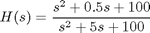
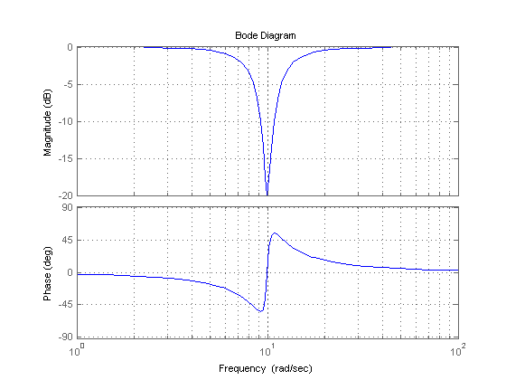
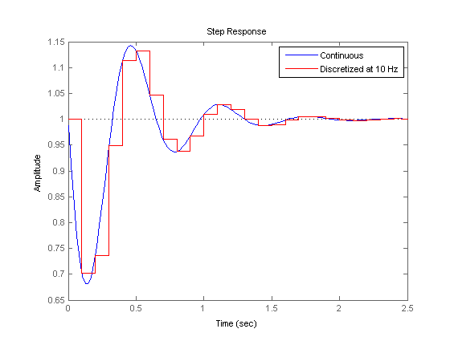
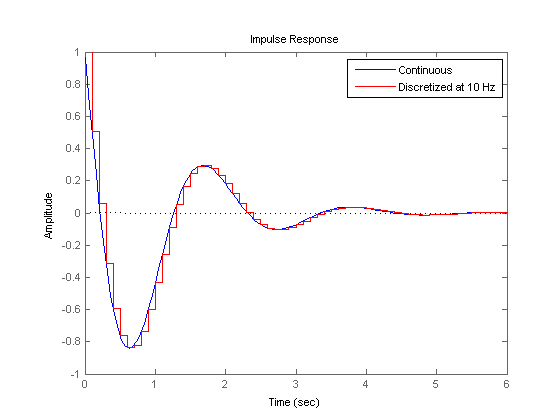
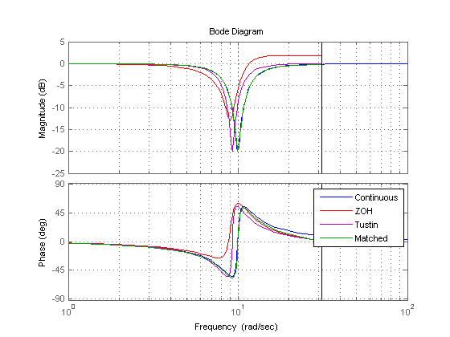
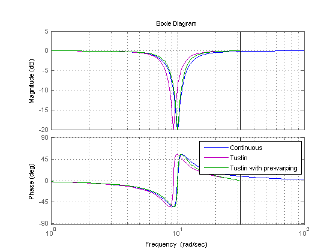
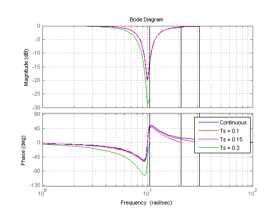
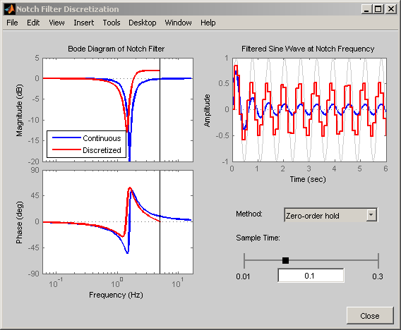

Discretizing a Notch Filter
While control system components are often designed in continuous time, they must generally be discretized for implementation on digital computers and embedded processors. This demo compares several techniques for discretizing a notch filter.
Contents
Continuous-Time Notch Filter
Notch filters are designed to reject signal content at a specific frequency by sharply attenuating the gain at that frequency. For this demo we consider the following notch filter:

You can plot the frequency response of this filter with the bode command:
H = tf([1 0.5 100],[1 5 100]); bode(H), grid
This notch filter provides a 20dB attenuation at the frequency w = 1 rad/s.
Choosing the Discretization Method
You can discretize a continuous-time system with the c2d command. Several discretization algorithms are supported by Control System Toolbox™, including:
- Zero-order hold
- First-order hold
- Impulse invariant
- Tustin (bilinear approximation)
- Tustin with frequency prewarping
- Matched poles and zeros
Which method to choose depends on the application and requirements.
The zero- and first-order hold methods and the impulse-invariant method are well-suited for discrete approximations in the time domain. For example, the step response of the ZOH discretization matches the continuous-time step response at each time step (independently of the sampling rate):
Ts = 0.1; Hdz = c2d(H,Ts,'zoh'); step(H,'b',Hdz,'r'), legend('Continuous','Discretized at 10 Hz')
Similarly, the impulse-invariant discretization has the same impulse response as the original system:
G = tf([1 -3],[1 2 10]); Gd = c2d(G,Ts,'imp'); impulse(G,'b',Gd,'r') legend('Continuous','Discretized at 10 Hz')
By contrast, the Tustin and Matched methods tend to perform better in the frequency domain because they introduce less gain and phase distortion near the Nyquist frequency. For example, compare the Bode responses of the continuous-time notch filter and its discretizations using the ZOH, Tustin, and Matched algorithms:
Hdt = c2d(H,Ts,'tustin'); Hdm = c2d(H,Ts,'match'); bode(H,'b',Hdz,'r',Hdt,'m',Hdm,'g',{1 100}), grid legend('Continuous','ZOH','Tustin','Matched')
This comparison indicates that the Matched method provides the most accurate frequency-domain approximation of the notch filter. However, you can further improve the accuracy of the Tustin algorithm by specifying a prewarping frequency equal to the notch frequency. This ensures accurate match near w = 10 rad/s:
Hdp = c2d(H,Ts,'prewarp',10); bode(H,'b',Hdt,'m',Hdp,'g',{1 100}), grid legend('Continuous','Tustin','Tustin with prewarping')
Choosing the Sampling Rate
The higher the sampling rate, the closer the match between the continuous and discretized responses. But how small can the sampling rate be, or equivalently, how large can the sampling interval be? As a rule of thumb, if you want the continuous and discretized models to match closely up to some frequency wm, make sure that the Nyquist frequency (sampling rate times Pi) is at least twice wm. For the notch filter, you need to preserve the shape near 10 rad/s, so the Nyquist frequency should be beyond 20 rad/s, which gives a sampling period of at most pi/20 = 0.16 s.
To confirm this choice, compare the matched discretizations with sampling period 0.1, 0.15, and 0.3:
Hd1 = c2d(H,0.1,'m'); Hd2 = c2d(H,0.15,'m'); Hd3 = c2d(H,0.3,'m'); bode(H,'b',Hd1,'r',Hd2,'m',Hd3,'g',{1 100}), grid legend('Continuous','Ts = 0.1','Ts = 0.15','Ts = 0.3')
As predicted, the discretization remains fairly accurate for Ts < 0.16 but starts breaking down for larger sampling intervals.
Interactive GUI
Click on the link below to launch an interactive GUI that further demonstrates how the discretized notch filter is affected by the choice of discretization algorithm and sampling rate.
Open the Notch Discretization GUI
notch_gui